This is the 5VZ-FE 3.4L V6 procedure. The 1997 4Runner was also sold with a 2.7L four-cylinder (listed in the manual tree as L4-2693cc 2.7L DOHC MFI). That is a different engine, and nothing on this page applies to it.
The manual tree has four 5VZ-FE books: SR5 and Limited, each in 2WD and 4WD. The head installation page is word for word the same in the SR5 4WD and Limited 2WD books. The only drivetrain line in the procedure is the A.D.D. vacuum hose, which the manual marks 4WD only.
The manual's procedure pulls both heads, both pairs of camshafts and the timing belt, and fits 2 new head gaskets. Budget for a timing belt too: the manual's replacement interval is 5 years / 60,000 miles, and the old one has to come off anyway.
Tap a step to check it off. Progress is saved in this browser only.
This book has no head gasket diagnosis page. These are the two checks it does give that point at one.
Engine cold, pull the radiator cap and look at the coolant. The manual's standard: no heavy rust or scale around the cap or filler hole, and the coolant should be free from oil.
Compression test. Warm the engine to operating temperature and shut it off. Remove the ignition coils, high-tension cords and all 6 spark plugs (16 mm plug wrench). Throttle wide open, fully charged battery so the engine cranks at 250 rpm or more, and test each cylinder as fast as you can.
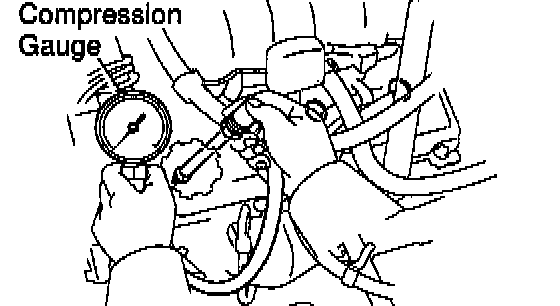
Compare the readings: standard is 1,200 kPa (174 psi) or more, minimum 1,000 kPa (145 psi), and no more than 100 kPa (15 psi) between cylinders.
On any low cylinder, squirt a little engine oil in through the plug hole and test it again. If the number comes up, the manual points at rings or bore. If it stays low, it points at a sticking or badly seated valve, or leakage past the gasket.
Plugs back in at 20 Nm (14 ft-lb), then the coils and cords.
Order follows the manual's Cylinder Head Removal page. Its step 16 is the timing belt; that job is written out in full below from the Timing Belt Removal page, minus the steps already done.
09213-54015 crankshaft pulley holding tool and 09330-00021 companion flange holding tool (crank pulley bolt). 09950-50010 puller C set if the pulley sticks. 09960-10010 variable pin wrench set (cam pulleys and exhaust cam sub-gears). 09248-55040 for valve shims. Also an 8 mm hex bit for the recessed head bolts, a 1.27 mm hex wrench for the belt tensioner, a press to reset the tensioner, snap ring pliers, and an M6 × 1.0 service bolt, 16–20 mm long, for each exhaust cam sub-gear. The manual accepts equivalents for every SST.
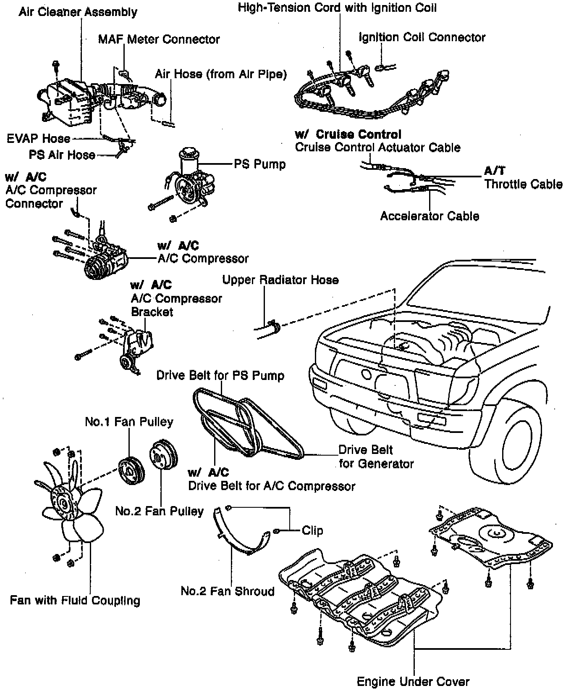
If the check engine light has stored anything, read the codes now. The manual notes that disconnecting the battery erases them.
Relieve fuel pressure. Disconnect the fuel pump connection, start the engine, and once it stalls on its own turn the key to LOCK.
Disconnect the battery negative (−) cable.
Remove the engine under cover.
Drain the coolant. Take the radiator cap off, open the drain plugs, and close them when it's empty.
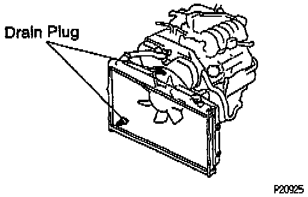
Remove the front exhaust pipe. The manual sends you to its Exhaust System section for this one.
Disconnect the heater hose.
Remove the air cleaner assembly.
Remove the high-tension cords with the ignition coils, and the spark plugs.
Do not take the radiator cap off while the engine and radiator are hot. Fluid and steam can blow out under pressure.
Disconnect the cables: (1) cruise control actuator cable if fitted, (2) accelerator cable, (3) A/T throttle cable.
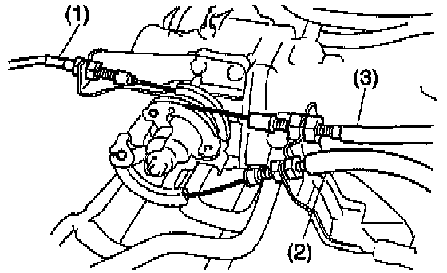
Disconnect (1) the brake booster vacuum hose, (2) the EVAP hose, and on 4WD (3) the A.D.D. vacuum hose.
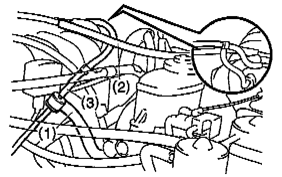
Disconnect (4) the fuel return hose and (5) the fuel inlet hose. Put a container under the joint, loosen it slowly, and plug the line once it's off.
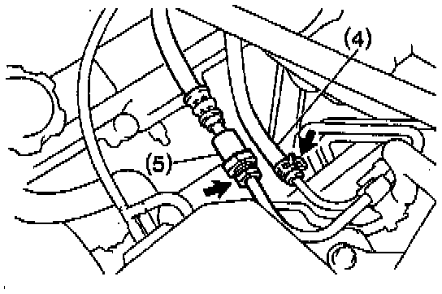
Intake chamber stay: remove the 2 bolts and the No. 1 throttle cable clamp, then the 2 bolts and the stay.
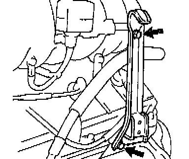
No. 2 timing belt cover: unclip the 4 high-tension cord clamps from it, remove the 6 bolts and the cover, and disconnect the camshaft position sensor connector.
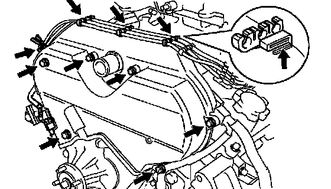
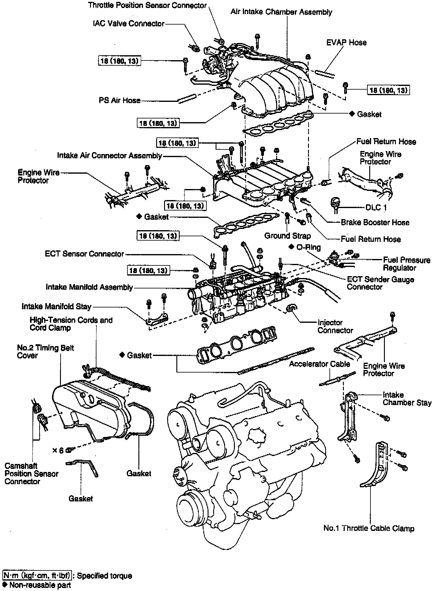
At the air intake chamber, disconnect (1) the throttle position sensor connector, (2) the IAC valve connector, (3) 2 PCV hoses, (4) 2 water bypass hoses and (5) the air assist hose from the throttle body.
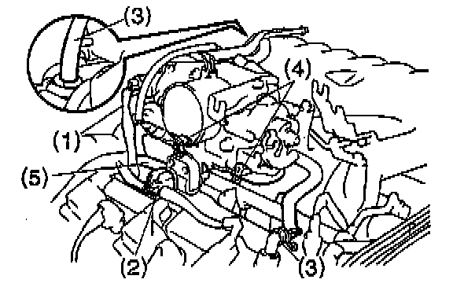
Remove the 4 bolts, 2 nuts, the air intake chamber and its gasket.
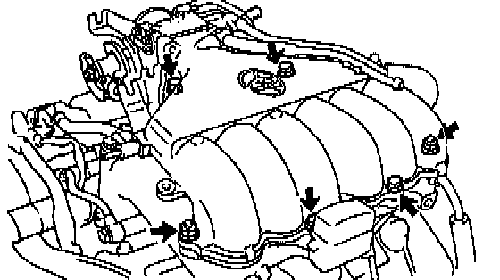
Intake air connector: remove the bolt and move the engine wire aside. Disconnect the fuel return hose (1) and the fuel pressure regulator vacuum hose (2). Remove the bolt holding the ground strap to the connector, and unclip the DLC1 from its bracket.
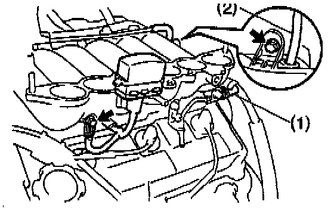
Remove the 3 bolts, 2 nuts, the intake air connector and its gasket.
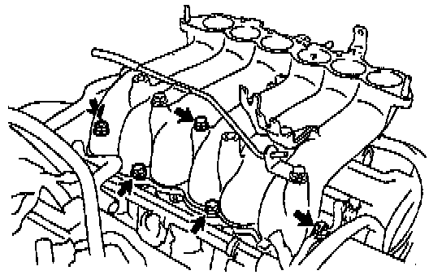
Engine wire protector: disconnect the 6 injector connectors (1), the ECT sensor connector (2) and the ECT sender gauge connector (3). Release the 2 engine wire clamps, remove the 3 bolts, and lift the protector off the head.
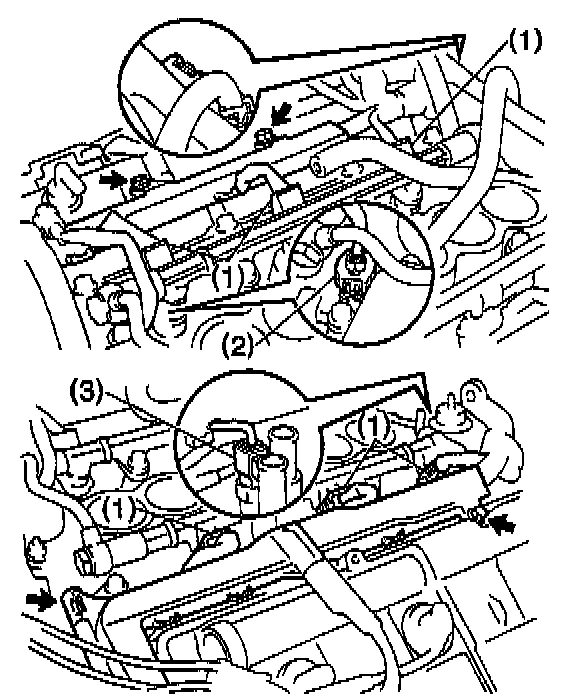
Release the other 2 engine wire clamps from the engine.
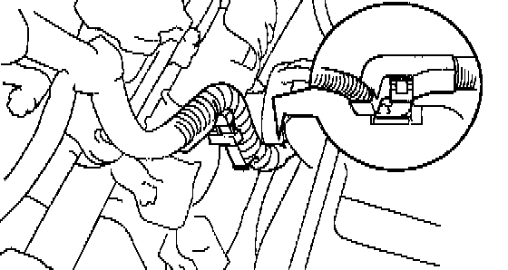
Remove the fuel pressure regulator.
Intake manifold: remove the 2 bolts and the manifold stay. Then the 8 bolts, 4 nuts, 4 plate washers, and lift the manifold off with the delivery pipes and injectors still on it. Pull the 2 gaskets.
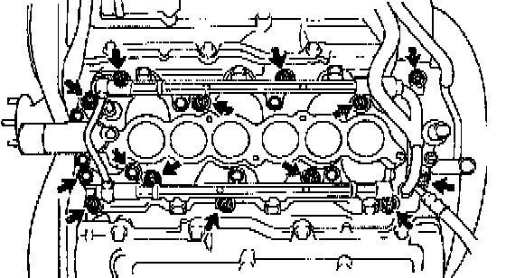
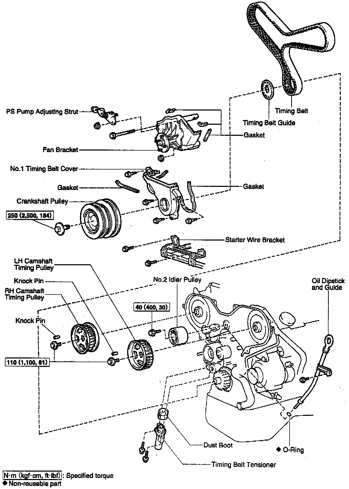
Disconnect the upper radiator hose.
Power steering pump: disconnect the 2 PS air hoses, remove the bolt holding the pressure tube clamp to the frame, take the belt off, then remove the bolt and nut and move the pump off the engine.
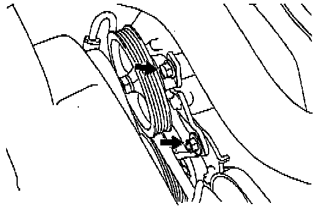
With A/C: unplug the compressor connector, take the belt off, remove the 4 bolts and move the compressor off the engine.
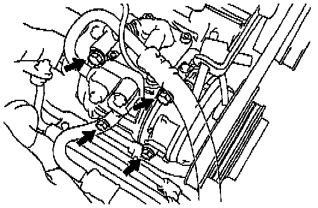
Loosen the fan-with-fluid-coupling nuts, remove the generator drive belt, remove the No. 2 fan shroud, then take off the fan with its fluid coupling and fan pulleys.
With A/C: remove the 5 bolts and the compressor bracket.
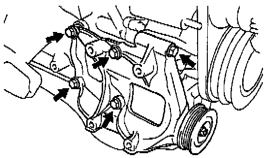
Remove the bolt, the oil dipstick and guide, and the O-ring.
Fan bracket: remove the nut and the PS pump adjusting strut, then the bolt, nut and bracket.
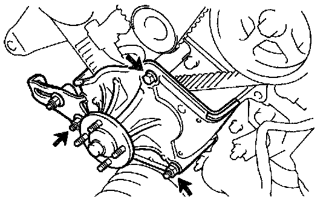
Crankshaft pulley: hold it with 09213-54015 and 09330-00021 and break the bolt loose. Remove the tools, bolt and pulley.
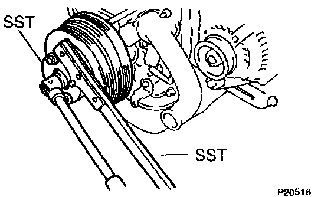
If the pulley won't come off by hand, pull it with 09950-50010 and a service bolt.
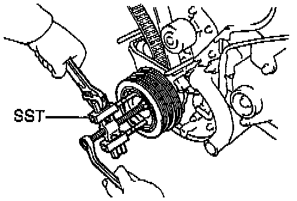
Remove the 2 bolts and the starter wire bracket, then the 4 bolts and the No. 1 timing belt cover.
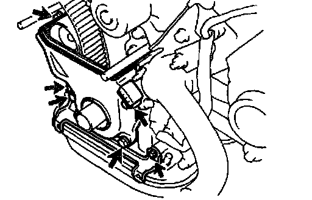
Remove the timing belt guide.
Set No. 1 cylinder at TDC/compression. Thread the crank pulley bolt back in temporarily and turn the crank clockwise until the mark on the crankshaft timing pulley lines up with the mark on the oil pump body. Check that both cam pulley marks line up with the marks on the No. 3 timing belt cover. If they don't, turn the crank one more full turn (360°). Remove the bolt.
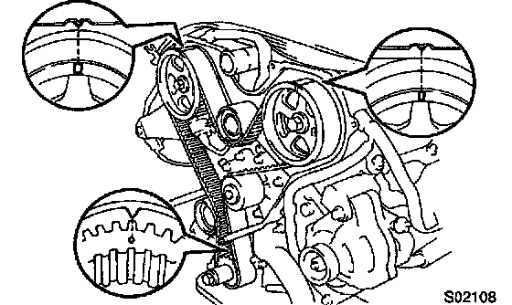
If you plan to reuse the belt, check it has 3 installation marks and a front mark. If they've worn off, paint 3 new ones matching the pulley timing marks, plus a front mark, before it comes off.
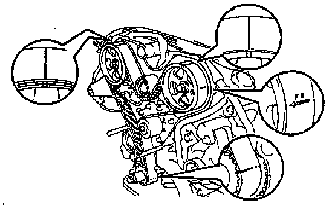
Timing belt tensioner: loosen the 2 bolts alternately, remove them, then the tensioner and its dust boot.
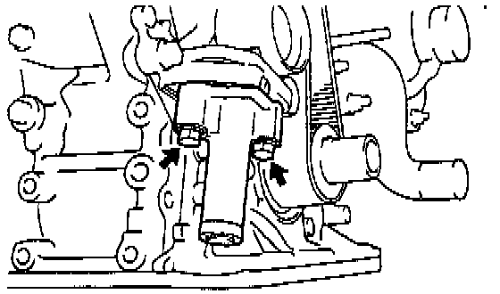
RH cam pulley: hold it with the variable pin wrench (09960-10010, arm 09962-01000, pin 10 09963-01000) and loosen the bolt. Remove the bolt, knock pin and pulley; the timing belt comes off with it.
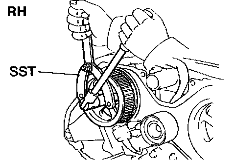
LH cam pulley: same tool, same way. Remove the bolt, knock pin and pulley.
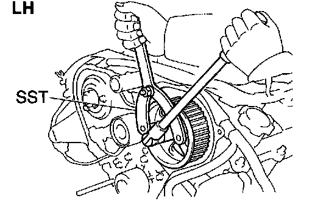
Remove the bolt and the No. 2 idler pulley.
The manual's belt page goes on to remove the No. 1 idler and the crankshaft timing pulley. The exploded view on the head removal page doesn't include either, so they stay on for a head job.
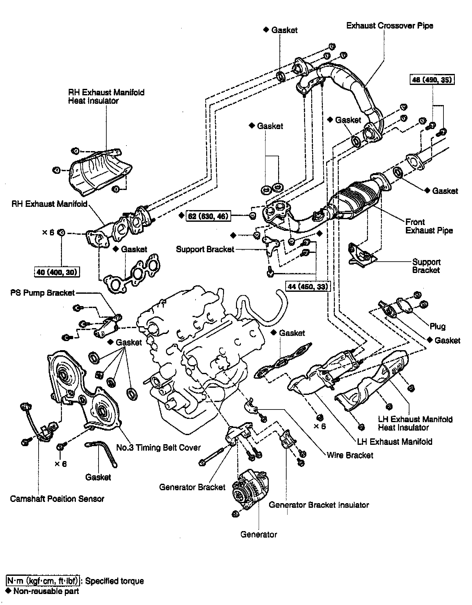
Camshaft position sensor: unplug it, unclip its clamp from the No. 3 timing belt cover, remove the bolt and the sensor.
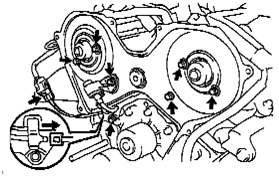
Remove the 6 bolts and the No. 3 timing belt cover.
Remove the generator. The manual sends you to its Starting and Charging section.
Generator bracket: remove the 2 bolts and the bracket insulator, then the 2 bolts and the bracket.
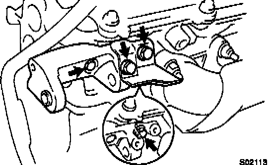
Remove the 3 bolts and the PS pump bracket.
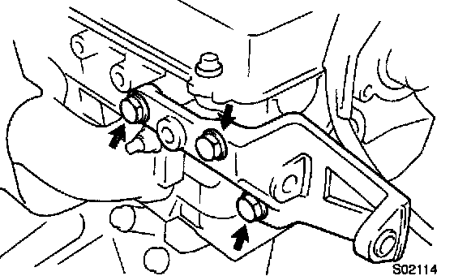
Remove the 6 nuts, the exhaust crossover pipe and its 2 gaskets.
Remove the 6 nuts and the exhaust manifold heat insulators, then the 12 nuts, both exhaust manifolds and their gaskets.
Remove the 8 bolts and seal washers from each cylinder head cover, and lift off both covers and gaskets.
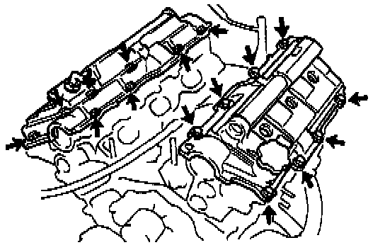
RH and LH are the right and left banks, seen from the driver's seat. Each head has an intake and an exhaust cam, geared together; the exhaust cam carries a spring-loaded sub-gear that has to be pinned before the cam comes out.
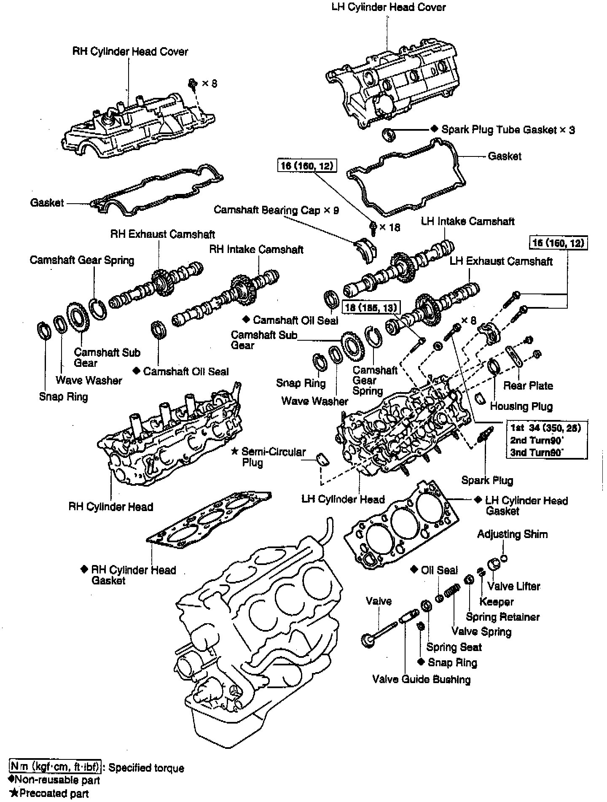
Camshaft thrust clearance is small. Keep each camshaft level while it comes out and goes in. If it tilts, the part of the head that takes the thrust can crack, and the cam can seize or break.
Exhaust cam: turn it with a wrench on the hex portion until the service bolt hole in the driven sub-gear points up.
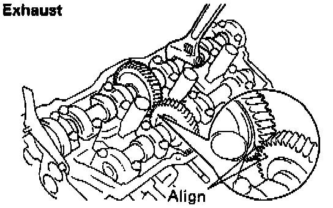
Keep turning with the wrench until the 2-dot timing marks on the drive and driven gears line up.
Pin the exhaust cam sub-gear to its main gear with the service bolt: M6, 1.0 mm pitch, 16–20 mm long. The spring force on the sub-gear must be off before the cam comes out.
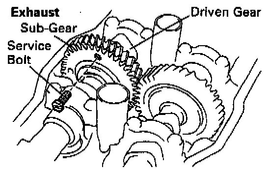
Loosen the 8 exhaust bearing cap bolts evenly, in several passes, in this order. Remove the 4 caps and the exhaust cam.
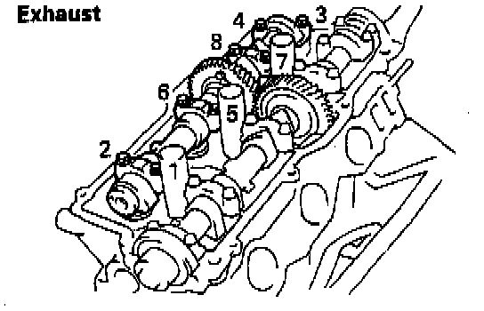
Loosen the 10 intake bearing cap bolts evenly, in several passes, in this order. Remove the 5 caps, the oil seal and the intake cam.
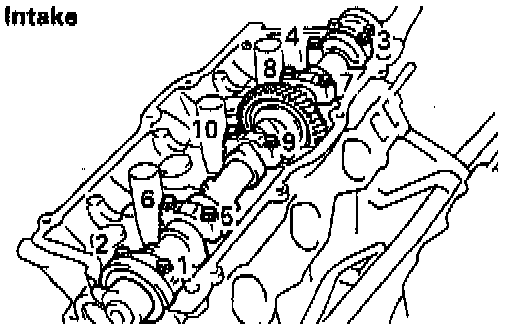
Exhaust cam: turn it with a wrench until the 1-dot timing marks on the drive and driven gears line up, then fit the service bolt the same way as on the RH side.
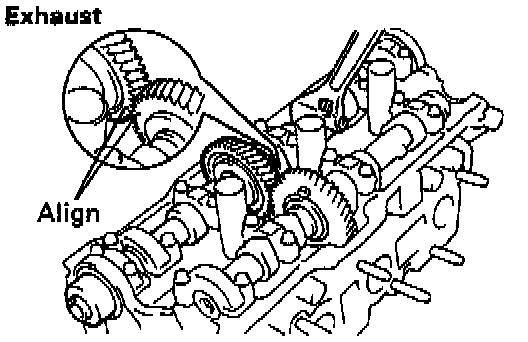
Loosen the 8 exhaust bearing cap bolts evenly, in several passes, in this order. Remove the 4 caps and the exhaust cam.
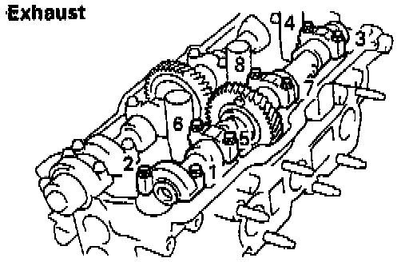
Loosen the 10 intake bearing cap bolts evenly, in several passes, in this order. Remove the 5 caps, the oil seal and the intake cam.
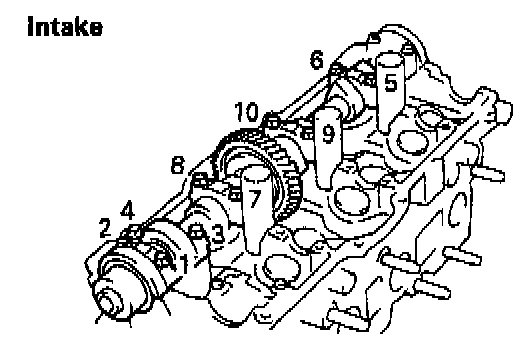
Lay out all 4 camshafts and all 18 bearing caps in order. Every cap goes back where it came from.
Clamp the exhaust cam in a vise by its hex portion, without marking the cam.
With the pin wrench (09960-10010, arm 09962-01000, pin 5 09963-00500), turn the sub-gear clockwise and pull the service bolt.
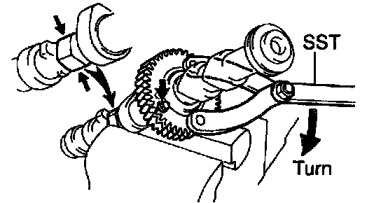
Remove the snap ring with snap ring pliers, then the wave washer, the sub-gear and the gear spring.
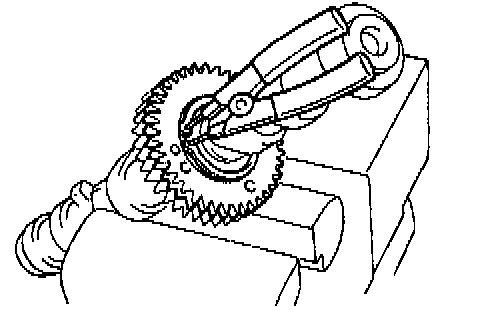
Keep the RH and LH sub-gears and springs apart. Do both exhaust cams.
Remove the bolt and disconnect the ground strap.
Remove the one recessed head bolt on each head with an 8 mm hex bit. RH is at the rear, LH at the front.
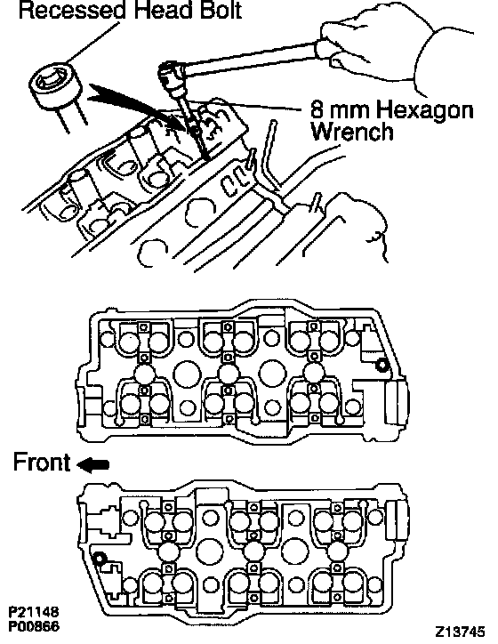
Loosen the 8 twelve-point bolts on one head evenly, in several passes, in the order shown, then do the other head. Remove all 16 bolts and their plate washers.
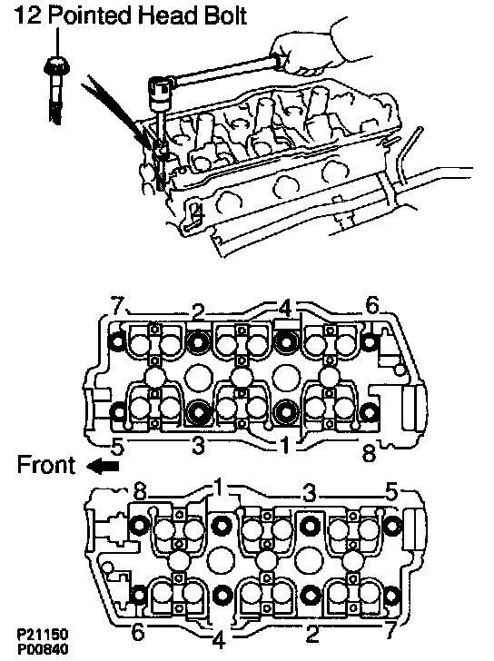
Lift each head off its dowels and set both on wooden blocks on the bench. If one sticks, pry between head and block with a screwdriver. Keep track of which head is which.
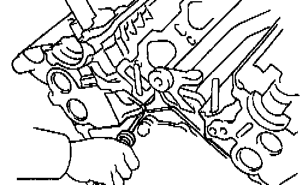
Front to the left.
Front to the left.
The manual's removal figure (P21150) carries exactly the same numbers as its tightening figure (P21149): bolt 1 in the middle of each head, 7 and 8 at the ends. Its text says only "in several passes, in the sequence shown" and warns that loosening in the wrong order can warp or crack the head. Whichever way you count, take every bolt down a little at a time over several passes so no single bolt carries the load.
From the manual's Cylinder Head Assembly: Testing and Inspection page. The same page covers valves, guides, springs and cams for a full rebuild; the limits for a gasket job are here.
Turn the crank to bring each piston to TDC in turn and scrape the carbon off the piston tops with a gasket scraper.
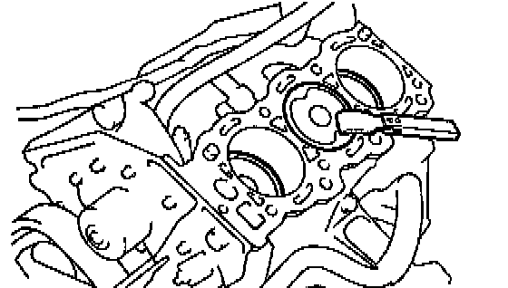
Scrape all gasket material off the block deck, then blow carbon and oil out of the bolt holes with compressed air. Protect your eyes.
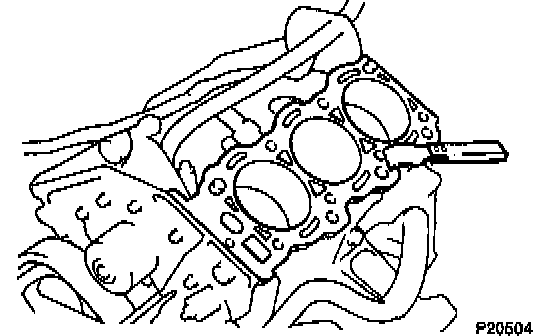
Scrape the gasket material off each head face. Don't scratch it.
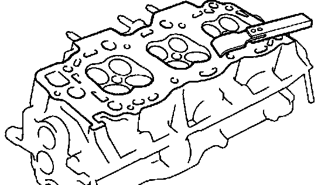
Wire-brush the carbon out of the combustion chambers, then clean the heads with a soft brush and solvent.
Check each head for warp with a precision straightedge and feeler gauge, on the block face and both manifold faces. Maximum is 0.10 mm (0.0039 in) on every surface.
Check the combustion chambers, intake ports, exhaust ports and block face of each head for cracks with dye penetrant.
Check the intake manifold on its head face and its intake air connector face: max 0.10 mm.
Check each exhaust manifold on its head face: max 1.00 mm (0.0394 in).
Check the air intake chamber and intake air connector mating faces: max 0.10 mm.
Warp over 0.10 mm or any crack: replace the cylinder head. This book gives no resurfacing allowance for the head. Over the limit on a manifold, air intake chamber or intake air connector: replace that part.
Belt: don't bend, twist or turn it inside out, and keep oil, water and steam off it. Cracked or damaged teeth, a worn or cracked face, or wear on one edge each point at a cause the manual lists (locked cam, damaged idler, misaligned pulley, bad cover gasket). Replace it if in doubt.
Idler pulleys: no oil leaking at the seal, and each turns smoothly.
Tensioner seal: a faint trace of oil on the push-rod side is fine. Any real leak, replace it.
Hold the tensioner in both hands and push the rod hard. It must not move. Never hold it with the push rod pointing down.
Push rod protrusion from the housing end: 10.0–10.8 mm. Out of range, replace the tensioner.
The manual's rule: replace any head bolt that is broken or deformed, and replace any bolt that won't reach 34 Nm on the first tightening pass.
Order follows the manual's Cylinder Head Installation page, with its step 18 (install timing belt) written out from the Timing Belt Installation page.
Both head gaskets, both intake manifold gaskets, the intake air connector and air intake chamber gaskets, both exhaust manifold gaskets, both crossover pipe gaskets, both camshaft oil seals, the fuel pressure regulator O-ring and the dipstick guide O-ring. Seal packing is Toyota 08826-00080 or equivalent.
Lay the 2 new head gaskets on the block. Watch the direction: the manual's figure shows an R and an L mark at the rear of the gaskets.
Set both heads on their gaskets.
Lightly oil the threads and the underside of the heads of the twelve-point bolts.
Fit the bolts and plate washers and tighten each head evenly, in several passes, in the order below, to 34 Nm (25 ft-lb). Then the other head. Any bolt that won't reach 34 Nm gets replaced.
Put a paint mark on the front of every bolt head.
Turn every bolt another +90° in numerical order.
Turn every bolt another +90°.
Check that every paint mark now faces rearward.
Oil the threads and underside of the recessed bolts and fit one per head with the 8 mm hex: 18 Nm (13 ft-lb).
Refit the ground strap bolt.
Front to the left, as in the manual figure.
Front to the left, as in the manual figure.
Clamp the exhaust cam in the vise by its hex. Fit (1) the gear spring, (2) the sub-gear with its pin and the main gear's pin on the spring ends, and (3) the wave washer. Snap ring on with the pliers.
With the pin wrench (09960-10010, arm 09962-01000, pin 09963-00600), turn the sub-gear clockwise until its hole lines up with the main gear's, and put the service bolt in loosely.
Line up the teeth of the main gear and sub-gear and tighten the service bolt. Do both exhaust cams.
Intake cam: oil the thrust portion and journals with new engine oil. Lay it in the head with its 2-dot timing mark turned 90° away from the head surface, as drawn.
Grease the lip of a new oil seal with MP grease and fit it on the front of the cam.
Clean off any old seal packing, then apply seal packing (08826-00080) to the No. 1 bearing cap where shown.
Fit the 5 intake caps in their own positions.
Oil the cap bolt threads and underside of the heads, then tighten the 10 bolts evenly in several passes in this order: 16 Nm (12 ft-lb).
Exhaust cam: oil the thrust portion and journals. Line up the 2-dot marks on the drive and driven gears and lay the cam in.
Fit the 4 exhaust caps in their own positions.
Oil the bolts, then tighten the 8 bolts evenly in several passes in this order: 16 Nm (12 ft-lb).
Pull the service bolt. Turn the cam with a wrench until the 1-dot marks on the drive and driven gears line up.
Intake cam: oil the thrust portion and journals. Lay it in with its 1-dot timing mark turned 90° away from the head surface, as drawn.
Grease a new oil seal lip and fit the seal.
Clean off the old packing and apply seal packing to the No. 1 bearing cap, same as the RH side.
Fit the 5 intake caps in their own positions.
Oil the bolts and tighten the 10 bolts evenly in several passes in this order: 16 Nm (12 ft-lb).
Exhaust cam: oil the thrust portion and journals. Line up the 1-dot marks on the drive and driven gears and lay the cam in.
Fit the 4 exhaust caps in their own positions.
Oil the bolts and tighten the 8 bolts evenly in several passes in this order: 16 Nm (12 ft-lb).
Pull the service bolt.
The head installation page calls for a clearance check here (its step 8). The steps below are the manual's Valve Clearance: Adjustments page. Check it cold.
The adjustment page is written for an assembled engine. It finds TDC with the crank pulley groove against the 0 on the No. 1 timing belt cover and turns the crankshaft 240° twice between checks. The crank only drives the cams once the belt is on, and the 0 mark needs the crank pulley and No. 1 cover fitted. At this point in the head job none of those are on.
The same page only removes the intake air connector and the head covers to get at the shims. So the check can wait until the belt is on and the crank pulley is back, if you hold off on the head covers and the intake air connector until it's done.
Turn the crank pulley until its groove lines up with the 0 mark on the No. 1 timing belt cover.
Check that the 1-dot marks on the cam drive and driven gears sit in a straight line with the head surface. If not, turn the crank one more full turn (360°).
Measure the valves shown in the first figure with a feeler gauge between the lifter and the cam. Spec, cold: intake 0.13–0.23 mm, exhaust 0.27–0.37 mm. Write down every reading that's out.
Turn the crank 240° (two-thirds of a turn) and measure the valves in the second figure.
Turn the crank another 240° and measure the valves in the third figure.
To change a shim: turn that cam until its lobe points up, then turn the lifter with a screwdriver so its notches sit at right angles to the cam.
Press the lifter down with SST (A) and slip SST (B) between the cam and the lifter (09248-55040: 09248-05410 and 09248-05420). Take SST (A) out. Put (B) in at a slight angle on the side marked 9 or 7, and ease it in from the intake side so the shim doesn't pinch it.
Lift the shim out with a small screwdriver and a magnetic finger.
Measure the old shim with a micrometer and work out the new one. T = old shim, A = measured clearance, N = new shim. Intake: N = T + (A − 0.18 mm). Exhaust: N = T + (A − 0.32 mm). Pick the shim closest to N; they come in 17 sizes from 2.500 to 3.300 mm in 0.050 mm steps. Or read it off the charts below.
Set the new shim on the lifter, numbers facing down. Press the lifter with SST (A) and pull SST (B).
Recheck the clearance.
Clean the old packing out of the semi-circular plug grooves and apply seal packing (08826-00080) in them.
Fit the 4 semi-circular plugs to the heads.
Apply seal packing to the heads where shown, fit the gasket to each head cover, and fit each cover with its 8 bolts, tightened evenly in several passes: 6 Nm (53 in-lb).
Exhaust manifolds with 2 new gaskets and the 12 nuts: 40 Nm (30 ft-lb).
Heat insulators with the 6 nuts: 8 Nm (71 in-lb).
Crossover pipe with 2 new gaskets and the 6 nuts: 45 Nm (33 ft-lb).
PS pump bracket: 18.5 Nm (14 ft-lb).
Generator bracket: 18.5 Nm (14 ft-lb). Then the generator (Starting and Charging section).
No. 3 timing belt cover: check its gaskets for cracks or peeling. To replace one, scrape and clean off the old material and stick the new gasket evenly along the black-shaded run. Fit the cover with its 6 bolts: 9 Nm (80 in-lb).
Camshaft position sensor: match its protrusion to the indentation in the RH head and fit the bolt: 8 Nm (71 in-lb). Clip the clamp to the No. 3 cover and plug it in.
The crankshaft timing pulley and No. 1 idler never came off, so this starts at the No. 2 idler.
No. 2 idler pulley with its bolt: 40 Nm (30 ft-lb). Check it turns smoothly.
LH cam pulley, flange side out. Line the knock pin in the cam up with the pulley's groove and slide it on. Bolt with the pin wrench holding: 110 Nm (81 ft-lb).
RH cam pulley, same way: 110 Nm (81 ft-lb).
Thread the crank pulley bolt in temporarily and turn the crank until the crankshaft timing pulley mark lines up with the oil pump body mark.
Turn each cam pulley with the pin wrench until its mark lines up with the mark on the No. 3 timing belt cover.
Engine cold. Wipe any oil or water off the pulleys; no cleaner, just a wipe.
Belt front mark forward. Line its installation marks up with the crank pulley mark and both cam pulley marks, and route it in this order: (1) LH cam pulley, (2) No. 2 idler, (3) RH cam pulley, (4) water pump pulley, (5) crank pulley, (6) No. 1 idler.
Reset the tensioner: in a press, push the rod in slowly at 981–9,807 N (200–2,205 lb).
When the holes in the rod and housing line up, push a 1.27 mm hex wrench through them to hold it. Release the press.
Fit the dust boot to the tensioner.
Fit the tensioner with its 2 bolts loosely, then tighten them alternately: 27 Nm (20 ft-lb). Pull the hex wrench out.
Check valve timing: turn the crank clockwise until the crankshaft timing pulley mark meets the oil pump body mark again, and confirm both cam pulley marks meet the No. 3 cover marks. If they don't, take the belt off and do it again. Remove the crank pulley bolt.
Timing belt guide, cup side out.
No. 1 timing belt cover: check the gaskets, replace any that are cracked or peeling, and fit it with the 4 bolts: 9 Nm (80 in-lb). Then the starter wire bracket with its 2 bolts.
Crank pulley: line the key up with its groove and slide it on. Hold it with 09213-54015 and 09330-00021 and torque the bolt: 250 Nm (184 ft-lb).
Fan bracket with its bolt and nut, and the PS pump adjusting strut with its nut.
Intake manifold with 2 new gaskets, delivery pipes and injectors on it: 8 bolts, 4 plate washers, 4 nuts, 18 Nm (13 ft-lb). Manifold stay, 2 bolts: 18 Nm.
Fuel pressure regulator back on.
Engine wire protector: 2 clamps, the 3 bolts, the other 2 clamps. Plug in the 6 injectors, the ECT sensor and the ECT sender gauge.
Intake air connector with a new gasket, 3 bolts and 2 nuts: 18 Nm. DLC1 back on its bracket, ground strap bolt in, fuel return hose and regulator vacuum hose on, engine wire bolt in.
Air intake chamber with a new gasket, 4 bolts and 2 nuts: 18 Nm. Reconnect the TPS and IAC connectors, both PCV hoses, both water bypass hoses and the air assist hose.
No. 2 timing belt cover: check its gasket and replace it along the shaded run if it's cracked or peeling. 6 bolts: 9 Nm (80 in-lb). Clip the 4 high-tension cord clamps on and plug in the camshaft position sensor.
Intake chamber stay, 2 bolts: 40 Nm (30 ft-lb). No. 1 throttle cable clamp with its 2 bolts.
New O-ring on the dipstick guide, wet it with soapy water, push the guide into the block, and bolt it to the generator bracket: 8 Nm (71 in-lb).
With A/C: compressor bracket, 47 Nm (35 ft-lb).
Fan with fluid coupling and pulleys on loosely, then the No. 2 fan shroud, then the generator belt, adjusted.
Tighten the fan coupling: 5.4 Nm (48 in-lb).
With A/C: compressor on with its 4 bolts, 25 Nm (18 ft-lb). Belt on, connector in.
PS pump on loosely, belt on, then the bolt and nut: 43 Nm (31 ft-lb). Pressure tube clamp bolt back in, both PS air hoses back on.
Reconnect the upper radiator hose.
Reconnect the fuel return and inlet hoses, the brake booster hose, the EVAP hose, and on 4WD the A.D.D. vacuum hose.
Reconnect the A/T throttle cable, the accelerator cable and the cruise control cable.
Spark plugs, 20 Nm (14 ft-lb), then the high-tension cords with the coils.
Heater hose on, air cleaner on, front exhaust pipe on (Exhaust System section).
Plug the fuel pump connection back in and reconnect the battery negative.
Fill with ethylene-glycol coolant mixed with demineralized or distilled water; the manual recommends 50–70% glycol and says no alcohol-type coolant. 9.0 L (9.5 US qt) with a rear heater, 8.0 L (8.5 US qt) without. Cap on.
Start the engine and bleed the cooling system. Top the reservoir up to FULL if it needs it.
Check for leaks.
Check ignition timing: 8–12° BTDC at idle, transmission in neutral (Powertrain Management section).
Engine under cover back on.
Road test. The manual says to listen for abnormal noise, shock or slippage and to check shift points.
Recheck the coolant level once it's cold.
| Item | Spec |
|---|---|
| Head bolts, 12-point oiled, 3 passes, paint mark ends rearward | 34 Nm → +90° → +90° |
| Head bolt, recessed 1 per head, 8 mm hex | 18 Nm |
| Camshaft bearing caps | 16 Nm |
| Cam timing pulley bolts | 110 Nm |
| Crankshaft pulley bolt | 250 Nm |
| Timing belt tensioner bolts | 27 Nm |
| No. 2 idler pulley bolt | 40 Nm |
| Timing belt covers No. 1, 2, 3 | 9 Nm |
| Camshaft position sensor | 8 Nm |
| Head covers | 6 Nm |
| Exhaust manifold nuts | 40 Nm |
| Exhaust heat insulators | 8 Nm |
| Exhaust crossover pipe | 45 Nm |
| Intake manifold, stay, intake air connector, air intake chamber | 18 Nm |
| Intake chamber stay | 40 Nm |
| PS pump bracket, generator bracket | 18.5 Nm |
| PS pump bolt and nut | 43 Nm |
| A/C compressor bracket | 47 Nm |
| A/C compressor bolts | 25 Nm |
| Fan fluid coupling | 5.4 Nm |
| Dipstick guide bolt | 8 Nm |
| Spark plugs | 20 Nm |
| Head warp, max all surfaces; over it, replace | 0.10 mm |
| Intake manifold, chamber, connector warp, max | 0.10 mm |
| Exhaust manifold warp, max | 1.00 mm |
| Valve clearance, cold intake / exhaust | 0.13–0.23 / 0.27–0.37 mm |
| Shim formula target intake / exhaust | 0.18 / 0.32 mm |
| Adjusting shims 17 sizes, 0.050 mm steps | 2.500–3.300 mm |
| Tensioner push rod protrusion | 10.0–10.8 mm |
| Tensioner reset load | 981–9,807 N |
| Compression standard / minimum / max spread, at 250 rpm | 1,200 / 1,000 / 100 kPa |
| Ignition timing idle, neutral | 8–12° BTDC |
| Coolant with / without rear heater | 9.0 / 8.0 L |
| Timing belt interval | 5 yr / 60,000 mi |
Foot-pound values are in the steps next to each Newton-meter figure, as the manual prints them.
Source: LEMON manual for the 1997 Toyota 4 Runner SR5 4WD V6-3.4L (5VZ-FE), Repair and Diagnosis: Cylinder Head Assembly (Cylinder Head Removal, Cylinder Head Installation, Testing and Inspection, Tightening and Service Specifications, Valve Clearance Adjustments and Specifications, Fuel Pressure Release), Timing Belt (Removal, Installation, Testing and Inspection, Specifications), Compression Check, Coolant (Service and Repair, Testing and Inspection, Capacity and Fluid Type), Ignition Timing specification, and the head removal exploded views. Head installation text checked against the 1997 4 Runner Limited 2WD 5VZ-FE book. Figures are the manual's own scans; tap one to open it full size.
{kind=link}
{kind=link}
{kind=link}
{kind=link}
{kind=link}
{kind=link}
{kind=link}
{kind=link}
{kind=link}
{kind=link}
{kind=link}
{kind=link}
{kind=link}
{kind=link}
{kind=link}
{kind=link}
{kind=link}
{kind=link}
{kind=link}
{kind=link}
{kind=link}
{kind=link}
{kind=link}
{kind=link}
{kind=link}
{kind=link}
{kind=link}
{kind=link}
{kind=link}
{kind=link}
{kind=link}
{kind=link}
{kind=link}
{kind=link}
{kind=link}
{kind=link}
{kind=link}
{kind=link}
{kind=link}
{kind=link}
{kind=link}
{kind=link}
{kind=link}
{kind=link}
{kind=link}
{kind=link}
{kind=link}
{kind=link}
{kind=link}
{kind=link}
{kind=link}
{kind=link}
{kind=link}
{kind=link}
{kind=link}
{kind=link}
{kind=link}
{kind=link}
{kind=link}
{kind=link}
{kind=link}
{kind=link}
{kind=link}
{kind=link}
{kind=link}
{kind=link}
{kind=link}
{kind=link}
{kind=link}
{kind=link}
{kind=link}
{kind=link}
{kind=link}
{kind=link}
{kind=link}
{kind=link}
{kind=link}
{kind=link}
{kind=link}
{kind=link}
{kind=link}
{kind=link}
{kind=link}
{kind=link}
{kind=link}
{kind=link}
{kind=link}
{kind=link}
{kind=link}
{kind=link}
{kind=link}
{kind=link}
{kind=link}
{kind=link}
{kind=link}
{kind=link}
{kind=link}
{kind=link}
{kind=link}
{kind=link}
{kind=link}
{kind=link}
{kind=link}
{kind=link}
{kind=link}
{kind=link}
{kind=link}
{kind=link}
{kind=link}
{kind=link}